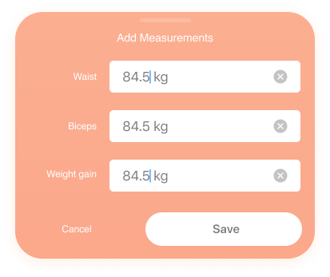
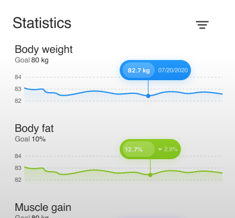
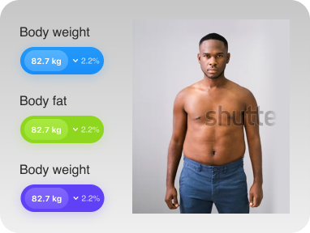
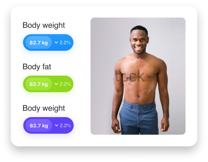
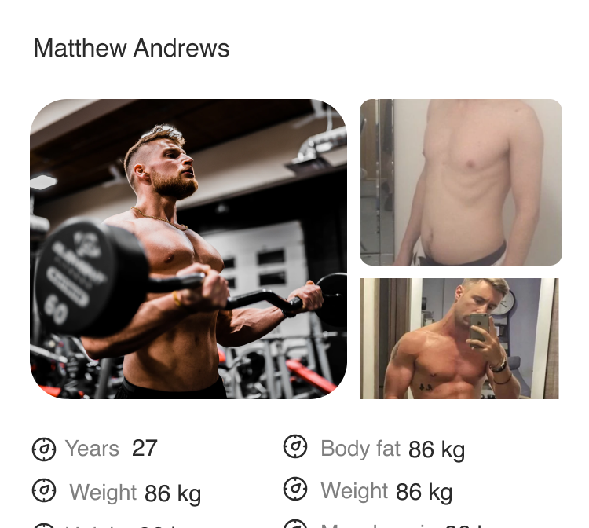

Scan. Track. Progress.
Monitor and track your body composition, simply by taking a photo
Why Body Fat Matters
Weight and BMI don't tell the whole story about health and body composition. They don't account for fat vs. muscle, fat distribution, or metabolic health.
Body fat percentage is a more accurate indicator of health, but traditional measurement methods like DEXA scans are expensive and inconvenient.
Cheaper methods like bioelectrical impedance scales are often inaccurate, with an error rate of about 8%.
Related Articles:
Leen: Affordable, Accurate Body Fat Tracking
Leen offers a cost-effective and precise way for individuals to monitor their body composition. With Leen's AI-powered technology, you can accurately measure your body fat percentage from the comfort of your own home, without the need for expensive equipment or time-consuming procedures.
So much more than a fitness app
Leen is accurate, convenient, and cost-effective. Its AI algorithms can be integrated into various applications, making it ideal for many markets.
Track your progress every single day
Measure your body. You can choose statistics that are relevant only for you and your goals.
Watch yourself grow into the body you want.
 Everything you need in one spot.
Get an individual plan, see tutorials, and chat with personal trainers.